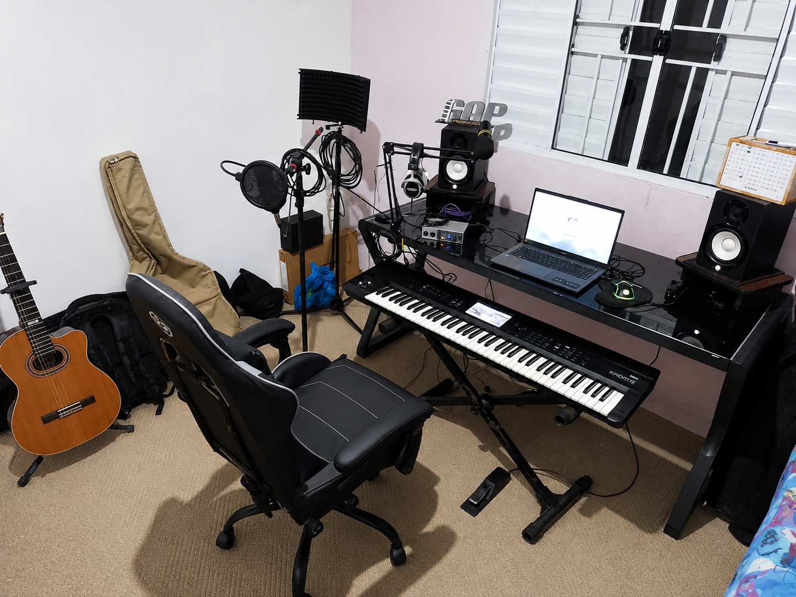

Geison Antunes Pereira
Música | Produção | Cultura | Identidade
Valorizando talentos, contando histórias e fortalecendo a cultura local.
Sobre mim
Sou músico, produtor e criador de projetos relacionados à música e cultura.
Atuo com composição, produção musical, gravação, edição e desenvolvimento de ideias que unem tecnologia, arte e identidade regional.
Experiência profissional
- Músico tecladista e produtor musical na Interprise Banda Show (2007–2022)
- Musicoterapeuta no Instituto Santa Dulce / CAPS (2022–2025)
- Experiência com atividades musicais, coordenação de grupos, apresentações e inclusão social através da arte.
GAP Produções
Estúdio independente voltado para a criação e fonografia musical.
Principais frentes de atuação:
- Gravação e produção de músicas
- Arranjos personalizados e edição de áudio
- Captação de áudio para diversos formatos
- Desenvolvimento de projetos autorais e trilhas sonoras
Portfólio Digital
Toque nos botões para abrir as produções:
Competências
- Teclado e harmonia musical aplicada
- Produção musical em DAWs (Cubase, UAD Luna)
- Gravação, mixagem e edição de áudio
- Arranjos musicais e composição de trilhas
- Criação e captação para projetos audiovisuais
Projeto: Cajati É Meu Lugar
Focado na valorização da memória, história e identidade de Cajati.
- Composição e produção musical dedicada à história local
- Registros em vídeo
- Divulgação cultural e resgate da história regional
Equipamentos
- Korg Krome 73
- Universal Audio Volt 2
- Sennheiser MK4
- Yamaha HS-50
- UAD Luna e Cubase

Objetivo
Desenvolver projetos que aproximem as pessoas através da música, registrem histórias locais e utilizem a tecnologia e a arte como ferramentas de expressão.